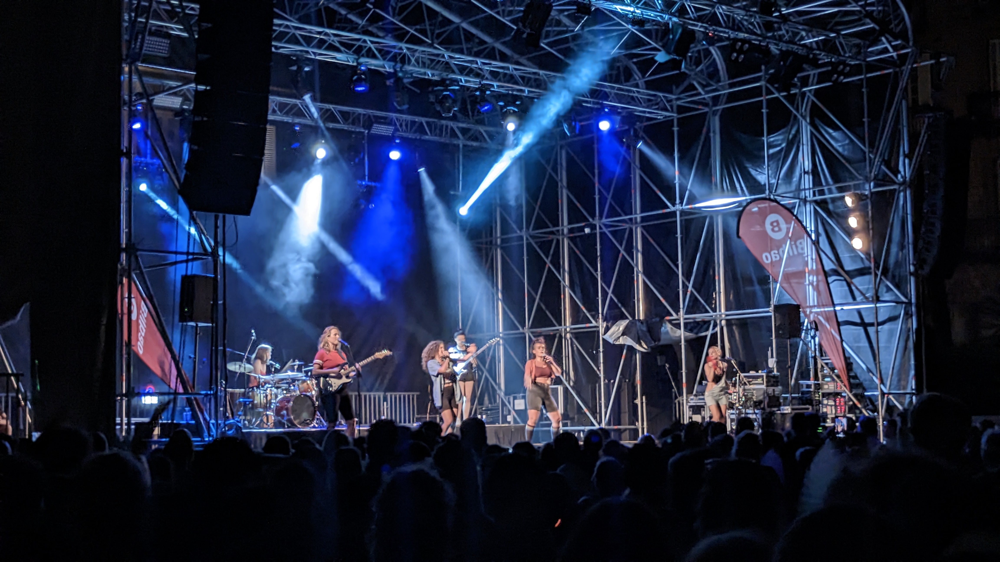
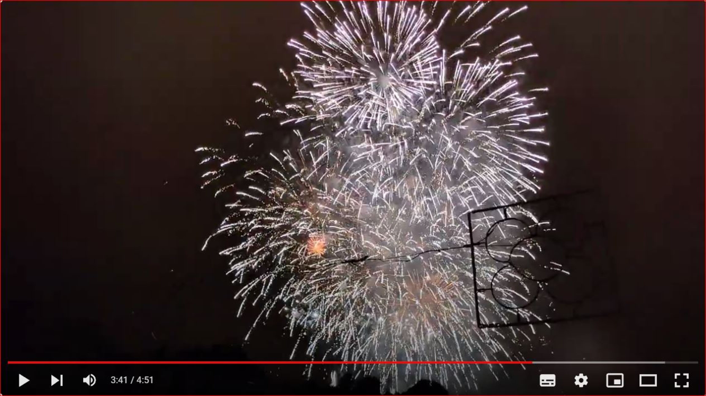

La Aste Nagusia, también conocida como la Semana Grande de Bilbao, es una fiesta de nueve días que se celebra en la capital de Vizcaya a finales de agosto. Es una de las fiestas más importantes del País Vasco y atrae a visitantes de todo el mundo. La historia de la Aste Nagusia se remonta al siglo XIX, cuando se celebraban fiestas en Bilbao para celebrar la Asunción de la Virgen María. En 1876, el Ayuntamiento de Bilbao decidió organizar una semana de fiestas más grande y ambiciosa, que se celebraría cada año a partir de entonces. La Aste Nagusia se ha convertido en una fiesta muy popular y es el momento para que los bilbaínos y los visitantes de la ciudad se reúnan y celebren. Durante la semana, hay una gran variedad de actividades, incluyendo conciertos, corridas de toros, verbenas, fuegos artificiales y mucho más. La Aste Nagusia es un periodo en la vida de los bilbainos y visitantes muy alegre y divertido, y consigue que la gente se olvide de sus problemas y se divierta. Es una fiesta que se vive en la calle, y es una ocasión para que la gente conozca a sus vecinos y se divierta con ellos. La Aste Nagusia es una conmemoración muy importante para Bilbao y se celebra con mucha ilusión. Es una fiesta que une a la ciudad y que hace que Bilbao sea un lugar más alegre y divertido. Si estás planeando una visita a Bilbao, te recomiendo que no te pierdas la Aste Nagusia. Es una fiesta que te va a encantar.
Fotos y Vídeos

